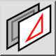
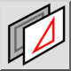
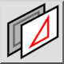
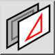

(Dé-)sélectionner calque
Barre d'outil / icône :
 

Menu : Sélectionner > (Dé-)sélectionner calque
Raccourci : T, L
Commandes : selectlayerbyentity | tl
Ceci est une traduction automatique.
Barre d'outil / icône :
 

Menu : Sélectionner > (Dé-)sélectionner calque
Raccourci : T, L
Commandes : selectlayerbyentity | tl
Sélectionne ou désélectionne toutes les entités de la même couche qu'une entité choisie.